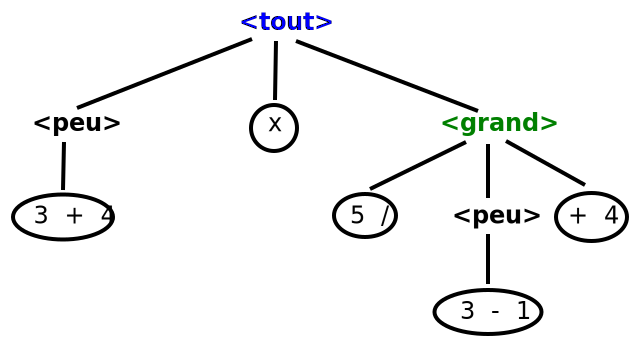

Ressource 1.02
Vous avez déjà tout vu
D'après les documents officiels et les resources disponibles :
-
Programme de sciences numériques et technologie de seconde générale et technologique (education.fr/)
-
Sciences numériques et technologie : 2nd (education.fr/)
-
Informatique au Lycée (par exemple, parmi les milliers disponibles)
Vous avez déjà tout vu en seconde générale,
pendant le cours
"Sciences Numériques et Technologie"
… on va juste essayer de s'assurer que tout est au clair
Références
-
Des tutoriels simples et basiques sont disponibles partout.
Ceux de w3school ont été abondamment relus : html css -
Une source d'articles CSS recommandable (à mon goût) : css tricks
-
Un source d'aide technique fiable (usuellement) : stackoverflow
Contexte du cours
Un document html
-
Un document html est une suite de caractères
-
Ce document est fourni soit :
-
par l'ordinateur sur lequel on se trouve (dit local),
par exemple à partir d'un fichier sur le disque dur -
par un autre ordinateur sur le réseau (dit serveur),
où le document est sauvegardé -
comme résultat de l'exécution d'un programme
sur l'ordinateur local ou sur un serveur
-
-
Le navigateur qui consulte le document
-
interprète la syntaxe du document selon la sémantique HTML
-
produit un affichage (avec lequel on peut interagir)
-
Un document html (suite)
-
Ces interactions provoqueront un ou plusieurs des effets suivants :
-
des modifications sur l'affichage
-
un envoi d'informations (vers le serveur)
-
un retour d'information, sous la forme d'un autre document html
(à son tour interprété puis affiché par le navigateur)
-
-
Premiers buts de ce cours :
-
apprendre la syntaxe et la sémantique HTML
-
pour produire des documents
-
Encodage des caractères
-
Un caractère est une suite de 0 et 1 dans la machine
-
Plusieurs manières de construire cette suite sont possibles
→ encodages -
Le plus prudent est d'annoncer au navigateur l'encodage choisi
-
Si on nous laisse libres de choisir, on prendra le plus courant :
utf-8
Stockage du document
-
Parmi les possibilités évoquées, nous choisirons la plus simple: nos documents sont sauvegardés sur le disque dur de notre machine, dans un fichier
-
Lorsque vous changez de machine, vous devez récupérer l'original du fichier :
-
à l'IUT, il y a un disque partagé par toutes les machines (Z:). Sauvegardez sur celui-ci, et vous aurez accès à votre fichier dans toutes les salles de TP.
-
Pour travailler chez vous, il vous faudra récupérer une copie du fichier : par clé usb, par email, ou par le cloud. Il vous faudra ensuite récupérer la version modifiée sur les machines de l'IUT, par les mêmes moyens.
-
-
Nous ne génèrerons pas de document à partir d'un programme. Cela correspondrait par exemple à un document qui affiche l'heure : Celui-ci devrait être mis à jour lors de chaque consultation. Un programme serait le bienvenu pour accomplir cette tâche. Cependant ce cours ne traite pas ce type de cas.
Navigateur utilisé pour visualiser les documents
-
Pour être prudent, nous devrions visualiser les documents que nous produisons avec beaucoup de navigateurs différents, car aucun ne respecte toute la norme w3c. Dans votre contexte professionnel, ceci sera une nécessité absolue
-
Cependant pour le R102 nous n'utiliserons qu'un seul navigateur, qui respecte une assez bonne partie de la sémantique : la dernière version stable de
Firefox -
Vous êtes libres de tester sur d'autres produits et/ou avec des versions plus anciennes, pour observer les différences
Composition d'un document HTML
Document html : l'annonce
-
Un document html est introduit par les caractères :
<!DOCTYPE html>On devine ce que cela signifie, à raison -
Lorsque ce préfixe est manquant, les navigateurs corrigent d'eux-mêmes
Ils font des suppositions et s'arrêtent/crashent si ça ne marche pas -
Remarque : ce préfixe fait partie de la norme xml. Il indique le DTD à utiliser.
-
Le contenu du document est placé entre parenthèses, comme on place une opération mathématique entre parenthèses pour la mettre en relief :
par exemple,(2*3)au lieu de2*3 -
Dans la syntaxe html,
La parenthèse ouvrante n'est pas(mais<html>
La parenthèse fermante est</html>
Les deux parties du document :
head et body
-
L'entête est la première partie du document, en anglais
head-
Elle contient des informations générales ou techniques sur le document
-
C'est là que l'on indique l'encodage choisi pour les caractères
-
On y mentionne aussi un titre, et la langue utilisée
-
On y placera les liens vers le css et les scripts
-
-
Le corps est la seconde partie du document, en anglais
body-
Elle contient l'information que le document présente à l'utilisateur final
-
C'est uniquement cette partie qui sert à calculer l'affichage
-
-
Le document html ne contient que ces deux parties
Un système de parenthésage
-
Chaque partie est mise dans sa propre paire de parenthèses
En maths on écrirait((1+1)*(12/4))
En html, on écrit<html> <head>..annonce..</head> <body>..corps..</body> </html>
-
Ces parenthèses sont appelées balises
Les noms qu'elles contiennent sont appelés tags -
La syntaxe HTML nous autorise à aligner par indentation
<html> <head> ..annonce.. </head> <body> ..corps.. </body> </html>
Un système de parenthésage (suite)
-
Techniquement, dans un document html, un espace, ou plusieurs espaces, ou une tabulation, ou plusieurs tabulations, ou un saut de ligne, ou plusieurs sauts de ligne (i.e. des whitespaces),
cela revient à un seul espace lors du calcul de l'affichage -
Cela nous permet d'indenter librement
-
Mais passer à la ligne dans le document html ne signifiera donc pas passer à la ligne lors du rendu dans le navigateur
-
De même augmenter la séparation entre deux mots en rajoutant des espaces n'aura pas d'effet sur l'affichage
-
-
Remarque : Pour les tags, majuscules et minuscules comptent pareil
Je vous conseille de n'utiliser que des minuscules, pour éviter de laisser croire à des distinctions qui n'existent pas
Attributs : Des informations supplémentaires pour les balises
-
Revenons au problème de l'encodage
-
C'est une information à placer dans
head -
On la place dans sa propre balise (paire de parenthèses)
-
Le tag de balise correspondant est :
meta
-
-
On s'attendrait à la syntaxe (écriture)
<meta>utf-8</meta>-
Ce n'est pas le choix qui a été fait :
Le tagmetan'est pas seulement utilisé pour l'encodage ; il peut par exemple servir à indiquer qui est l'auteur de la page ( autres utilisations ) -
Pour distinguer ces utilisations, la balise (i.e. la parenthèse) peut contenir des informations supplémentaires : des attributs
-
Attributs (suite)
-
Principe :
-
On place les attributs dans la balise ouvrante (seulement)
-
La syntaxe correspondante est :
nom="valeur" -
Dans notre cas :
<meta charset="utf-8">
-
-
Formellement :
-
L'identifiant (le nom) d'un attribut est une suite de caractères, sans whitespace
-
Le signe égal ne doit pas être décollé, ni de l'identifiant, ni de la valeur
-
La valeur est la suite de caractères comprise entre des guillemets doubles
-
Elle ne peut donc pas contenir de guillemets doubles
-
Balises unaires : parenthèses sans contenu
-
Le traitement de l'encodage montre des balises sans contenu :
L'intérieur des parenthèses est vide
Toute l'information est dans le tag et l'attribut -
La syntaxe html définit les balises unaires :
Celles qui n'ont pas de contenu,
et donc pas besoin de balise fermante -
Attention : Selon les versions de html et de xml, il faut distinguer explicitement ou non les balises unaires en utilisant la syntaxe dite auto-fermante :
<meta charset="utf-8" /> -
Personnellement, je préfère utiliser cette syntaxe explicite
Mais ce n'est pas le cas de l'actuel validateur du w3c
Eléments courants de head
-
Vocabulaire : une paire de balises et tout son contenu est appelée un élément
-
Dans l'élément
head, Les tags les plus courants sont les suivants :-
<title>: titre du document
Non affiché dans la fenêtre principale
Les navigateurs l'utilisent souvent pour l'onglet -
<meta>: variété d'informations techniques (dont encodage et langue) -
<style>: lien vers un fichier css (mise en page) -
<link>: lien vers un fichier, usuellement de script -
<script>: code de script directement inclus dans le document html
-
-
Consultez les tutoriels pour des survols et la documentation pour les détails
Le corps du document html
Imbrication hiérarchique des éléments
-
Le parenthésage imbriqué des balises construit
une hiérarchie par inclusion entre les éléments du document -
A la base, on a les informations présentées à l'utilisateur final
(comme les nombres sont la base des expressions mathématiques) -
Les imbrications des balises doivent ajouter du sens aux briques de base
(comme les opérations et parenthèses dans les calculs mathématiques) -
La sémantique ajoutée
Peut être uniquement perceptible par un humain
(par exemple la disposition des informations sur la page)
Ou bien elle peut être explicitement mentionnée
(par l'utilisation de tags précis)
Informations de base
-
Les tags les plus courants pour les informations de base sont :
-
<a>: un lien -
<img>: une image -
<p>: paragraphe de texte -
<ul>: une liste (dont chaque élément sera parenthésé par des balisesli) -
<ol>: une liste numérotée -
<h1>…<h6>: Titre principal, titre de sous-partie, … ( voir ceci )
-
div et span :
Regroupements non sémantiques
-
Avant html5, on pouvait découper le contenu en blocs et/ou en rubans
-
Les deux tags archétypes correspondants existent toujours :
-
div
Défini un nouveau rectangle qui encadre son contenu.
Occupe toute la largeur disponible, et la hauteur nécessaire -
span:
Employé pour sélectionner un morceau au sein d'un flot
par exemple pour surligner un bout d'un paragraphe
N'impose pas de nouveau rectangle
(i.e. ne casse pas le flot d'écriture)
-
-
Ces deux outils sont à la base de l'organisation spaciale
(i.e la disposition des contenus de base)
Groupements et hiérarchie sémantiques (principe)
-
divetspanlaissent à la mise en page la responsabilité de faire apparaître clairement pourquoi on a voulu ce découpage de blocs -
Il faudra aussi espérer que le lecteur l'interprète comme l'auteur l'a imaginé
-
Une machine (un moteur de recherche par exemple) n'y arrivera pas
-
html5 rajoute des tags dits sémantiques pour expliciter la structure du contenu
-
Leur rôle est de faire apparaître sans ambiguïté le sens que l'auteur veut donner à chaque partie du document
-
Les tags introduits proviennent des rôles les plus communément rencontrés dans les documents Web
Groupements et hiérarchie sémantiques (tags)
-
Structuration du contenu principal (tags binaires)
header (!!!attention : pas head) main section article article ... section ... footer -
Autres éléments très fréquents (tags binaires)
-
nav: liens permettant de naviguer dans la page et/ou le site -
address: coordonnées d'une personne, entreprise … -
aside: informations complémentaires par rapport au sujet principal (main)
-
Modèle d'un document html
Résumons
-
Un document html est une suite de caractères
annoncée par<!DOCTYPE html>
contenue dans une paire de balises<html></html> -
L'élément
htmlest composé de deux sous-éléments :headetbody -
headcontient une suite d'éléments décrivant l'information technique -
bodycontient l'information à destination de l'utilisateur final
hiérarchisée en premier lieu par les balises sémantiques -
En plus du contenu (content) qu'elles parenthèsent, certaines balises peuvent porter des informations supplémentaires, grâce aux attributs
-
La documentation indique quels attributs sont autorisés pour quels tags
et ce que le navigateur en fera
DOM (analogie)
-
Pour le navigateur, les imbrications des parenthèses définissent le
DOM
parenthèses [ (3 + 4) x [ 5 / (3 - 1) + 4 ] ]
balises <tout> <peu> 3 + 4 </peu> x <grand> 5 / <peu> 3 - 1 </peu> + 4 </grand> </tout>
DOM (arbre) 
DOM : Document Object Model
-
Le point de départ est la balise
html. On l'appelle la racine de l'arbre -
headetbodysont ses deux fils (on parle des noeudshtml,head,body, …) -
Récursivement, le dom contient les fils des fils, puis les fils des fils des fils …
-
pour
head, il s'agit d'une série de noeuds, dont untitleet plusieursmeta -
pour
body, le premier fils serait un noeudheader, suivit demain, puis defooter -
Un noeud
navs'intercalera probablement entreheaderetmain -
mainà son tour aura des filssection -
Les
sectionauront des fils titre (h1…) etarticle, ou à nouveausection -
Les
articleauront eux le vrai contenu (p,img, …)
-
-
Remarque : Dans le dom, les attributs sont intégrés aux noeuds